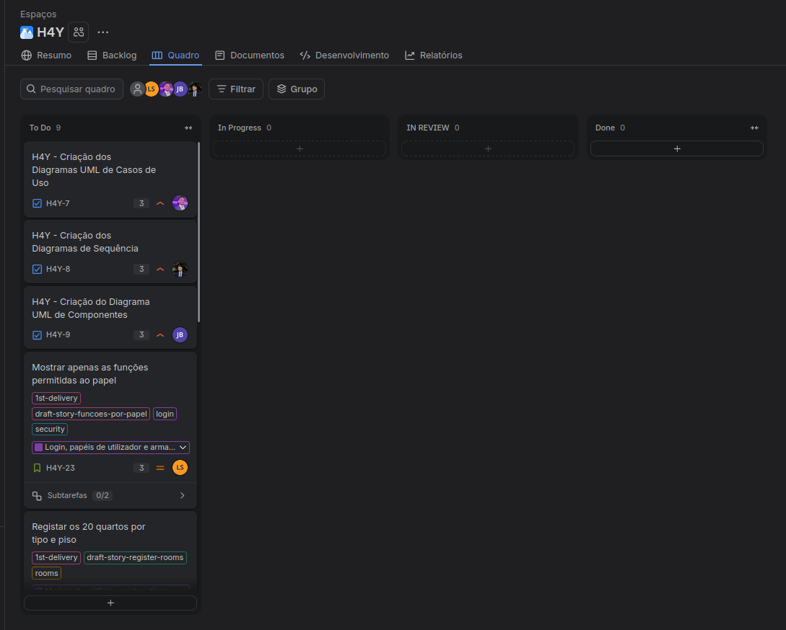

| Preparação | Reunião | Acompanhamento |
|---|---|---|
| - Rever o backlog e a ordem das stories - Confirmar os pontos de cada story - Confirmar a disponibilidade da equipa - Verificar se o código já cobre alguma story | - Definir o sprint goal com valor para o hotel - Confirmar a capacidade (mínimo de 13 pontos) - Selecionar as stories e atribuir responsáveis - Combinar os nomes das classes novas | - Atualizar o quadro no Jira (sprint, datas e responsáveis) - Fazer o daily scrum todos os dias para verificar o andamento da sprint - Validar as stories com os testes de aceitação - Reunião de alinhamento das regras de negócio |
| Nome | Função |
|---|---|
| Lukas Sperandio | Team Leader (Scrum Master e Product Owner) e developer |
| Tiago Borja | Developer |
| Pedro Costa | Developer |
| António Martinho | Developer |
| José Cruz | Developer |
| Tema do sprint | Sprint 2: o gestor inicia sessão e cria contas de funcionário. O rececionista inicia sessão e vê a janela principal com as funções do seu papel. |
|---|---|
| Pontos da história | 27 pontos planeados. 18 concluídos (H4Y-32, H4Y-20, H4Y-22, H4Y-24 e H4Y-27). 9 pontos em carry-over (H4Y-7, H4Y-8 e H4Y-9). |
| Resumo | Concluídos: fundação do projeto, login do gestor e do rececionista, janela principal e criação de contas. Carry-over com o feedback do professor: H4Y-7 e H4Y-9 já corrigidos (PRs #23 e #21). Falta H4Y-8 (diagramas de sequência). |
| Data de início | 24/10/2026 |
|---|---|
| Data de término | 30/10/2026 |
| Tema do sprint | O hotel passa a ter os seus 20 quartos e os preços por noite no sistema. A receção já consegue dizer ao cliente que quartos existem e quanto custam, e cada funcionário só usa as funções do seu papel. |
| Sprint atual | Sprint anterior | |
|---|---|---|
| Total de dias | 7 dias - 5 úteis | 7 dias - 5 úteis |
| Capacidade da equipa | 40 h (5 elementos x 8 h) | 50 h (5 elementos x 10 h) |
| Capacidade prevista | 16 pontos + 2 de extra (mínimo de 13; velocidade da Sprint 2: 18) | 27 pontos (previsão da equipa, sem histórico) |
| Capacidade individual | 8 h por elemento | 8 h por elemento |
| Risco | Mitigação |
|---|---|
| O Pedro tem uma story nova (H4Y-25) e o carry-over H4Y-8. | As correções da H4Y-8 são pequenas e vêm primeiro. Se atrasar, o Tiago ajuda e a story extra (H4Y-51) não começa. |
| O diagrama de classes não tem os repositórios de pisos, quartos e tipos de quarto. Duas pessoas podem criar classes parecidas. | Combinar os nomes no primeiro dia. Cada PR atualiza o código e o docs/uml juntos. |
| Quatro stories acrescentam botões ao MainController e ao main.fxml. Conflitos de merge. | Fazer merge primeiro da H4Y-61 (menu por papel). Os outros acrescentam o botão já com a regra nova. |
| A tabela rooms (H4Y-25) depende das tabelas floors (H4Y-28) e room_types (H4Y-26). | Merge cedo da H4Y-62 e da H4Y-65. Até lá, os testes usam repositórios em memória. |
| A equipa interpreta as regras de negócio de formas diferentes (retrospetiva). | Reunião de alinhamento no início da sprint. |
| Q-01 (20 quartos, 7/10/3) e Q-11 (o gestor define o preço base) não estão confirmadas pelo professor. | Perguntar na próxima aula prática. |
| Chave | Story | Pontos | Responsável | Subtasks |
|---|---|---|---|---|
| H4Y-23 | Mostrar apenas as funções permitidas ao papel | 3 | Lukas Sperandio | H4Y-60, H4Y-61 |
| H4Y-28 | Consultar os pisos e zonas do hotel | 2 | Tiago Borja | H4Y-62 |
| H4Y-25 | Registar os 20 quartos por tipo e piso | 3 | Pedro Costa | H4Y-63, H4Y-64 |
| H4Y-26 | Definir o preço base por noite de cada tipo de quarto | 3 | José Cruz | H4Y-65, H4Y-66 |
| H4Y-50 | Consultar a lista de quartos | 2 | António Martinho | H4Y-67 |
| H4Y-8 | Diagramas de sequência (carry-over: feedback do professor) | 3 | Pedro Costa | - |
| H4Y-51 | Extra: Cadastrar item de stock | 2 | Tiago Borja | H4Y-68 |
